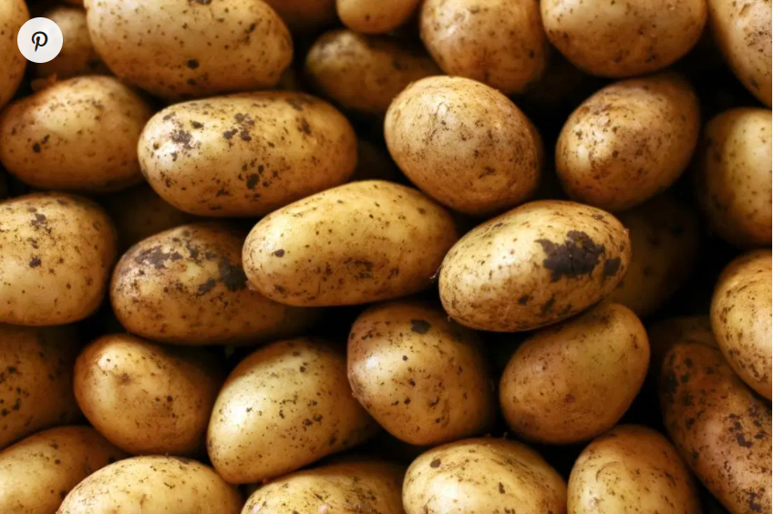

Welcome to the church of potatas
How the Potato Changed the World
When potato plants bloom, they send up five-lobed flowers that spangle fields like fat purple stars. By some accounts, Marie Antoinette liked the blossoms so much that she put them in her hair. Her husband, Louis XVI, put one in his buttonhole, inspiring a brief vogue in which the French aristocracy swanned around with potato plants on their clothes. The flowers were part of an attempt to persuade French farmers to plant and French diners to eat this strange new species.
Today the potato is the fifth most important crop worldwide, after wheat, corn, rice and sugar cane. But in the 18th century the tuber was a startling novelty, frightening to some, bewildering to others—part of a global ecological convulsion set off by Christopher Columbus.
About 250 million years ago, the world consisted of a single giant landmass now known as Pangaea. Geological forces broke Pangaea apart, creating the continents and hemispheres familiar today. Over the eons, the separate corners of the earth developed wildly different suites of plants and animals. Columbus’ voyages reknit the seams of Pangaea, to borrow a phrase from Alfred W. Crosby, the historian who first described this process. In what Crosby called the Columbian Exchange, the world’s long-separate ecosystems abruptly collided and mixed in a biological bedlam that underlies much of the history we learn in school. The potato flower in Louis XVI’s buttonhole, a species that had crossed the Atlantic from Peru, was both an emblem of the Columbian Exchange and one of its most important aspects.
Compared with grains, tubers are inherently more productive. If the head of a wheat or rice plant grows too big, the plant will fall over, with fatal results. Growing underground, tubers are not limited by the rest of the plant. In 2008 a Lebanese farmer dug up a potato that weighed nearly 25 pounds. It was bigger than his head.
Many researchers believe that the potato’s arrival in northern Europe spelled an end to famine there. (Corn, another American crop, played a similar but smaller role in southern Europe.) More than that, as the historian William H. McNeill has argued, the potato led to empire: “By feeding rapidly growing populations, [it] permitted a handful of European nations to assert dominion over most of the world between 1750 and 1950.” The potato, in other words, fueled the rise of the West.
Equally important, the European and North American adoption of the potato set the template for modern agriculture—the so-called agro-industrial complex. Not only did the Columbian Exchange carry the potato across the Atlantic, it also brought the world’s first intensive fertilizer: Peruvian guano. And when potatoes fell to the attack of another import, the Colorado potato beetle, panicked farmers turned to the first artificial pesticide: a form of arsenic. Competition to produce ever-more-potent arsenic blends launched the modern pesticide industry. In the 1940s and 1950s, improved crops, high-intensity fertilizers and chemical pesticides created the Green Revolution, the explosion of agricultural productivity that transformed farms from Illinois to Indonesia—and set off a political argument about the food supply that grows more intense by the day.
In 1853 an Alsatian sculptor named Andreas Friederich erected a statue of Sir Francis Drake in Offenburg, in southwest Germany. It portrayed the English explorer staring into the horizon in familiar visionary fashion. His right hand rested on the hilt of his sword. His left gripped a potato plant. “Sir Francis Drake,” the base proclaimed,
disseminator of the potato in Europe
in the Year of Our Lord 1586.
Millions of people
who cultivate the earth
bless his immortal memory.
The statue was pulled down by Nazis in early 1939, in the wave of anti-Semitic and anti-foreign measures that followed the violent frenzy known as Kristallnacht. Destroying the statue was a crime against art, not history: Drake almost certainly did not introduce the potato to Europe. And even if he had, most of the credit for the potato surely belongs to the Andean peoples who domesticated it.
How can potatoes benefit my health?
Potatoes are edible tubers, available worldwide and all year long. They are relatively cheap to grow, rich in nutrients, and they can make a delicious treat.
The humble potato has fallen in popularity in recent years, due to the interest in low-carb foods.
However, the fiber, vitamins, minerals, and phytochemicals it provides can help ward off disease and benefit human health.
Potatoes were first domesticated in the Andes in South America up to 10,000 years ago. Spanish explorers introduced them to Europe in the early 16th century.
They are now the biggest vegetable crop in the United States (U.S.), where the average person eats 55 pounds, or 25 kilograms (kg) of potatoes every year. They are an important staple food in many countries around the world.
This MNT Knowledge Center feature is part of a collection of articles on the health benefits of popular foods.
Fast facts on potatoes:
Some evidence suggests that potatoes might help reduce inflammation and constipation
A medium potato contains around 164 calories and 30 percent of the recommended daily B6 intake.
A baked potato on a winter’s day makes an economical, warming, and nutritious treat.
Benefits
Potatoes can be healthful if prepared in the right way.
A high intake of fruits and vegetables can benefit health and reduce the risk of many lifestyle-related health conditions.

Potatoes contain important nutrients, even when cooked, that can benefit human health in various ways.
Here we look at 10 ways in which the potato might contribute to a healthful lifestyle, including preventing osteoporosis, maintaining heart health, and reducing the risk of infection.
1) Bone health
The iron, phosphorous, calcium, magnesium, and zinc in potatoes all help the body to build and maintain bone structure and strength.
Iron and zinc play crucial roles in the production and maturation of collagen.
Phosphorus and calcium are both important in bone structure, but it is essential to balanceTrusted Source the two minerals for proper bone mineralization. Too much phosphorus and too little calcium result in bone loss and contribute to osteoporosis.
2) Blood pressure
A low sodium intake is essential for maintaining a healthy blood pressure, but increasing potassium intake may be just as important. Potassium encourages vasodilation, or the widening of the blood vessels.
According to the National Health and Nutrition Examination Survey (NHANES), fewer than 2 percentTrusted Source of American adults meet the daily 4,700-milligram recommendation.
Potassium, calcium, and magnesium are all present in the potato. These have been found to decrease blood pressure naturally.
3) Heart health
The potato’s fiber, potassium, vitamin C, and vitamin B6 content, coupled with its lack of cholesterol, all support heart health.
Potatoes contain significant amounts of fiber. Fiber helps lower the total amount of cholesterol in the blood, thereby decreasing the risk of heart disease.
Research based on the NHANES has linkedTrusted Source a higher intake of potassium and a lower intake of sodium to a reduced risk of all-cause mortality and heart disease.
4) Inflammation
Choline is an important and versatile nutrient that is present in potatoes. It helps withTrusted Source muscle movement, mood, learning, and memory.
It also assists in:
maintaining the structure of cellular membranes
transmitting nerve impulses
the absorption of fat
early brain development
One large potato contains 57 mg of choline. Adult males need 550 mg, and females 425 mg a day.
5) Cancer
Potatoes contain folate. Folate plays a role in DNA synthesis and repair, and so it prevents many types of cancer cells from forming due to mutations in the DNA.
Fiber intake from fruits and vegetables like potatoes are associated with a lowered risk of colorectal cancer.
Vitamin C and quercetin also function as antioxidants, protecting cells against damage from free radicals.
6) Digestion and regularity
The fiber content in potatoes helps prevent constipation and promote regularity for a healthy digestive tract.
7) Weight management and satiety
Dietary fibers are commonly recognized as important factors in weight management and weight loss.
They act as “bulking agents” in the digestive system. They increase satiety and reduce appetite, so a person feels fuller for longer and is less likely to consume more calories.
8) Metabolism
Potatoes are a great source of vitamin B6. This plays a vital role in energy metabolism, by breaking down carbohydrates and proteins into glucose and amino acids. These smaller compounds are more easily utilized for energy within the body.
9) Skin
Collagen is the skin’s support system. Vitamin C works as an antioxidant to help prevent damage caused by the sun, pollution, and smoke. Vitamin C also helps collagen smooth wrinkles and improve overall skin texture.
10) Immunity
Research has found that vitamin C may help reduceTrusted Source the severity and duration of a cold. Potatoes are a good source of vitamin C.
Applications of New Breeding Technologies for Potato Improvement
The first decade of genetic engineering primarily focused on quantitative crop improvement. With the advances in technology, the focus of agricultural biotechnology has shifted toward both quantitative and qualitative crop improvement, to deal with the challenges of food security and nutrition. Potato (Solanum tuberosum L.) is a solanaceous food crop having potential to feed the populating world. It can provide more carbohydrates, proteins, minerals, and vitamins per unit area of land as compared to other potential food crops, and is the major staple food in many developing countries. These aspects have driven the scientific attention to engineer potato for nutrition improvement, keeping the yield unaffected. Several studies have shown the improved nutritional value of potato tubers, for example by enhancing Amaranth Albumin-1 seed protein content, vitamin C content, β-carotene level, triacylglycerol, tuber methionine content, and amylose content, etc. Removal of anti-nutritional compounds like steroidal glycoalkaloids, acrylamide and food toxins is another research priority for scientists and breeders to improve potato tuber quality. Trait improvement using genetic engineering mostly involved the generation of transgenic products. The commercialization of these engineered products has been a challenge due to consumer preference and regulatory/ethical restrictions. In this context, new breeding technolgies like TALEN (transcription activator-like effector nucleases) and CRISPR/Cas9 (clustered regularly interspaced palindromic repeats/CRISPR-associated 9) have been employed to generate transgene-free products in a more precise, prompt and effective way. Moreover, the availability of potato genome sequence and efficient potato transformation systems have remarkably facilitated potato genetic engineering. Here we summarize the potato trait improvement and potential application of new breeding technologies (NBTs) to genetically improve the overall agronomic profile of potato.